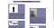
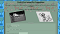
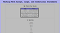
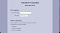

My Class Projects
- My Assignments Website
- This is the first project we did and it also happens to be the website you are on right now.
- A Story and a Schedule
- This is the second project that had us use that tactics of sectioning HTML code.

- Pet Competition
- This was meant to test our form making and graphic design skills.

- Arrays and Loops
- This was meant to make us work with javaScript on our own without a tutorial.

- About Me
- This was to get us to use JavaScript to add elements, append things, and create style.
- Handling Events on Forms
- This project was about, as the title says, handling events on forms
